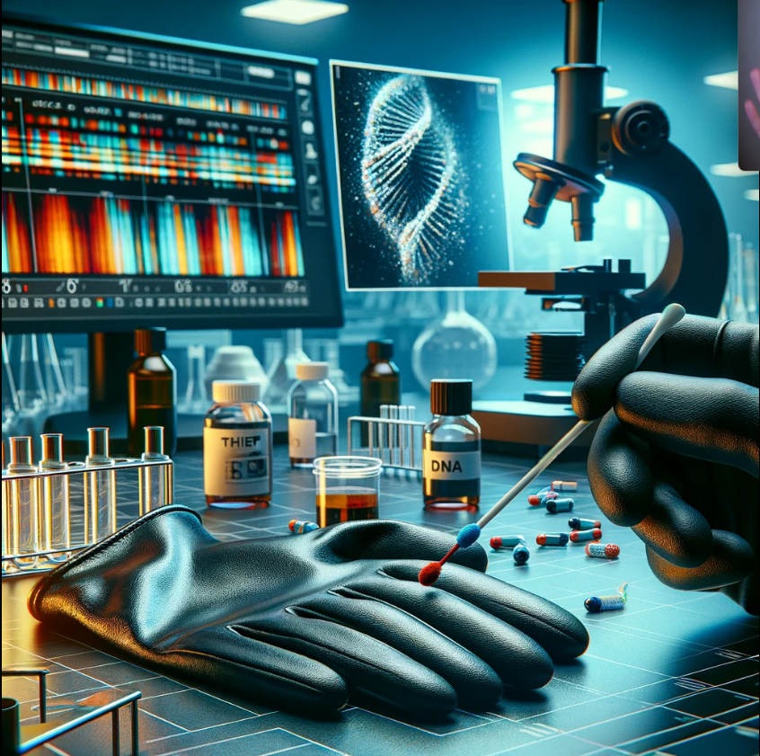

Investigação do Roubo do Diamante
Um valioso diamante foi roubado de um museu. O detetive é chamado para investigar.
Passo 1: O que você vai fazer?
Escolha uma das opções abaixo:
O detetive encontra uma luva caída perto do pedestal vazio.
O que você vai fazer agora?
O detetive recebe os resultados da análise da luva.
O que você vai fazer agora?
Você decide ignorar a luva e continuar investigando.
O detetive identifica um suspeito que sai do museu de maneira suspeita.
O que você vai fazer agora?
A polícia identifica o suspeito como um ladrão conhecido.
A luva pertence a um funcionário do museu.
O que você vai fazer agora?
Você decide procurar mais pistas no museu, mas não encontra nada de novo.
Você volta para a última decisão importante.

O detetive encontra uma nova luva no museu e a analisa.
A análise revela que a luva pertence a um funcionário do museu.
O detetive segue os passos do suspeito e encontra mais evidências no museu.
A luva pertence a um funcionário do museu.
O detetive confronta o funcionário, que confessa ser cúmplice e revela a localização do diamante. Caso resolvido!
Parabéns, você resolveu o caso!
O detetive monitora o funcionário, que confessa ser cúmplice e revela a localização do diamante. Caso resolvido!
Parabéns, você resolveu o caso!